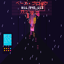

Claim an epoch
Ten consecutive Ethereum Sepolia blocks shape a six-second city. Their hashes, gas and bloom make each night its own.
Free mint. One piece per epoch, first come, first served. You can claim multiple epochs. You’ll need Sepolia test ETH for network gas.
Only completed epochs within the latest 256 blocks can be claimed. Select the latest epoch, or choose another recent one.
Loading Ethereum Sepolia settings…
View transaction ↗
Your night, onchain
View a minted epoch and download its original GIF. The first piece is shown above.
Download original GIF ↓- Scene
- ALLEY
- Epoch
- 1194011
- Duration
- 6 seconds
Eight nights
Seven city scenes and rare Satoyama. Explore example animations below; each token’s scene and details come from its blocks.